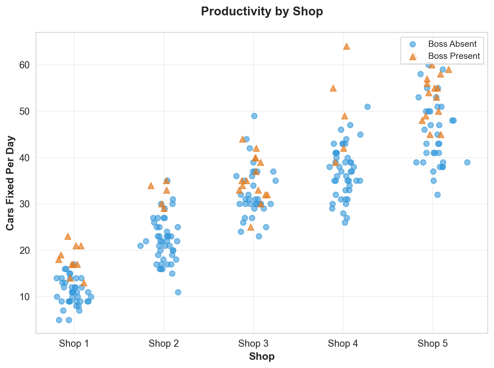
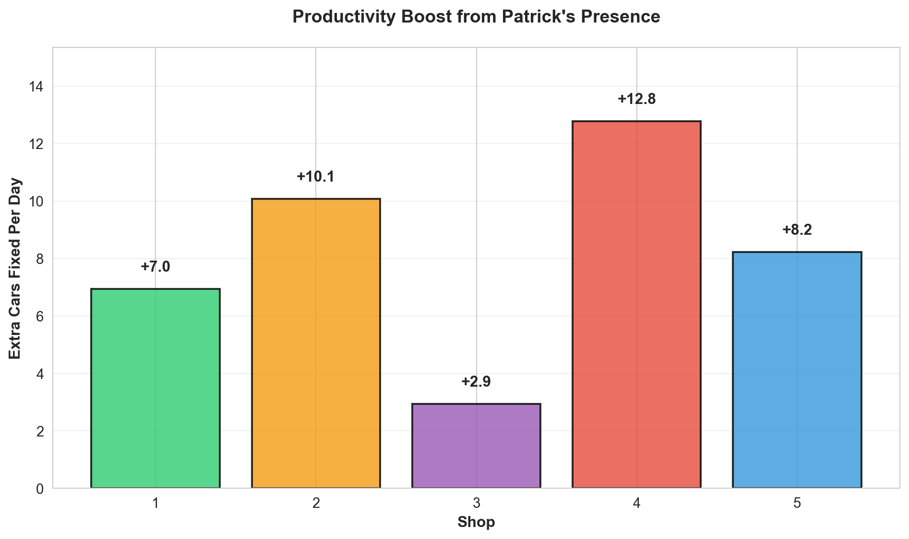
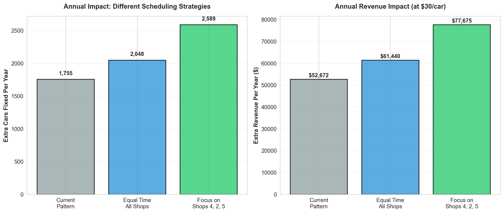

Patrick’s Auto Shop: Scheduling Strategy Report
Data-Driven Recommendations for Maximum Productivity
Where Should Patrick Be? A Data-Driven Scheduling Strategy
Executive Summary
After analyzing 250 days of productivity data across your 5 shops, here’s the bottom line: Focus on Shop 4 and Shop 2. These shops show the biggest productivity boost when you’re present—about 13 and 10 extra cars per day, respectively.
The Recommendation: Prioritize Shop 4 (highest impact), then Shop 2. Shop 3 shows the smallest benefit from your presence, so you can visit your brother there without worrying about lost productivity elsewhere.
What the Data Shows
This chart shows every single day of data. The blue dots are days you weren’t there; the orange triangles are days you were. The dashed lines show the average for each situation.
What jumps out: - Shop 4: Big difference between the blue and orange lines—your presence really matters here - Shop 2: Also shows a clear boost when you’re present - Shop 3: The lines are closer together—your presence helps, but not as dramatically
Avg Without Boss Avg With Boss Daily Gain (cars) Days Without Boss Days With Boss
Shop
4 37.02 49.80 12.78 45.0 5.0
2 22.13 32.20 10.07 45.0 5.0
5 45.51 53.73 8.22 35.0 15.0
1 11.05 18.00 6.95 40.0 10.0
3 32.46 35.40 2.94 35.0 15.0The Numbers That Matter
Shop 4 is your biggest opportunity: When you’re there, they fix about 13 more cars per day compared to when you’re not. That’s roughly $390 more revenue per day (assuming $30 per car).
Shop 2 comes in second: About 10 extra cars per day when you’re present—roughly $300 more revenue per day.
Shop 5 shows a solid 8-car boost, while Shop 1 shows about 7 extra cars.
Shop 3 has the smallest impact: Only about 3 extra cars per day when you’re there. Since you mentioned loving to visit your brother there, this is actually good news—you can visit without worrying about missing bigger opportunities elsewhere.

Recommended Scheduling Strategy
Priority Order (Based on Data)
- Shop 4 - Highest impact (13 extra cars/day)
- Shop 2 - Strong impact (10 extra cars/day)
- Shop 5 - Good impact (8 extra cars/day)
- Shop 1 - Moderate impact (7 extra cars/day)
- Shop 3 - Lowest impact (3 extra cars/day) - Good for personal visits
Weekly Schedule Suggestion
If you work 5 days a week, consider this rotation: - Monday & Tuesday: Shop 4 (your biggest impact) - Wednesday: Shop 2 (second biggest impact) - Thursday: Shop 5 or Shop 1 (depending on other priorities) - Friday: Shop 3 (visit your brother, minimal productivity loss)
This maximizes your impact on the shops that need you most.
How Confident Can You Be?
The honest answer: We’re working with 250 days of data, which is decent but not huge. Here’s what we can say:

What this means in plain English:
- Shop 4: We’re 95% confident your presence adds between 9 and 17 extra cars per day. The most likely value is around 13.
- Shop 2: We’re 95% confident you add between 6 and 14 extra cars per day. Most likely around 10.
- Shop 3: The range is smaller (about 0 to 6 extra cars), and the impact is less certain.
Bottom line: The pattern is clear—Shops 4 and 2 benefit most. But remember, these are averages. Some days will be better, some worse. Don’t expect exactly 13 extra cars every single day at Shop 4.
Future Projections: What If You Follow This Strategy?

**Key Insight:** By focusing on Shops 4, 2, and 5, you could add approximately 833 more cars per year compared to your current pattern.
That's roughly $25,002 in additional annual revenue.Final Recommendations
1. Immediate Action
- Prioritize Shop 4: This is your biggest opportunity. Spend more time here.
- Focus on Shop 2: Second-highest impact. Make this a regular stop.
- Don’t worry about Shop 3: Since you enjoy visiting your brother there and the productivity impact is small, you can visit without significant opportunity cost.
2. Weekly Schedule
- Allocate 2 days per week to Shop 4
- Allocate 1-2 days per week to Shop 2
- Rotate through Shops 1 and 5 for the remaining days
- Visit Shop 3 when convenient (personal preference, minimal productivity impact)
3. What to Watch For
- Variability: Some days will be better or worse than average. That’s normal.
- Seasonal changes: This data represents past performance. Keep tracking to see if patterns change.
- Other factors: Weather, staffing, equipment issues—these all affect productivity beyond just your presence.
4. The Bottom Line
By focusing your time on Shops 4, 2, and 5, you could potentially add thousands of extra cars fixed per year compared to spreading your time equally. That translates to significant revenue growth.
Remember: This is data-driven guidance, not a rigid rule. Use it to inform your decisions, but stay flexible based on what’s happening day-to-day at each shop.
Report generated from 250 days of productivity data across 5 auto repair shops.